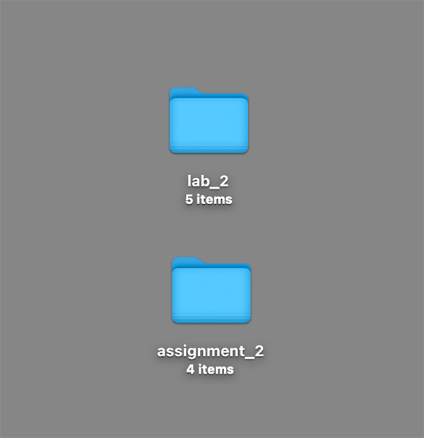
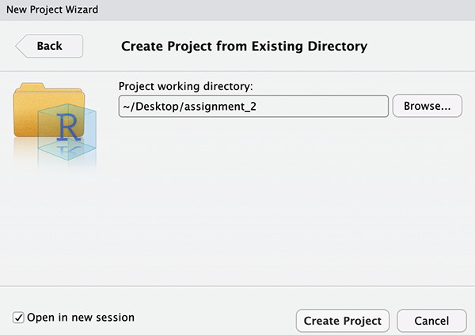
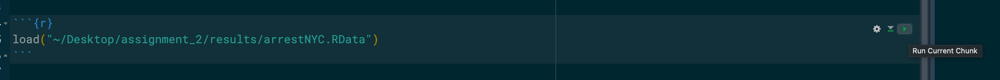

Class 2 Assignment: Exploratory Data Analysis with NYC Arrest Data, Jan-June 2025
Fall 2025 | Instructor: Stephen Metts | PGUD 5160 - CRN 2247
Preamble
In this second week’s assignment, we will utilize the framework from Class 2 lab steps to develop an R Markdown report that features an EDA for NYC Arrest Data. Follow the sequence of steps below to first orient to this week’s content: lecture, materials and weekly reading(s). Once complete, move along to creating your R Markdown deliverable, making sure to upload the assignment deliverable, due Thursday, September 11th, 2025 at 11:59pm.
Week 1 Class 1 Materials:
Week 1 Class 1 Reading:
We will utilize the previous title throughout the course. For this week, focus only on the following definitions listed alphabetically both here and in the book:
- administrative data
- cleanliness
- consent
- cooked data
- data politics
- data subject
- exploratory data analysis (EDA)
- lineage
- nominal data
- pre-analytics
At 7am Friday, September 12th, the second weekly quiz will open in Canvas. Utilize the posted Class 3 Agenda to gain the quiz access code which will be posted towards the beginning of the agenda. Expect 10 questions in total that cover the concept definitions listed above.
In addition to the quizzed reading material, review following three short articles. Each details very recent and real issues surrounding data collection - who controls that process and why data collection has become ‘controversial’.
Class 2 Assignment:
Step 1:
Similar to how we started our lab_2 project directory, we will first simply copy/paste the lab_2 directory at the desktop and name the new copied directory assignment_2. Notice that there are 4 files, not 5; the script for lab_2 can/should be removed.

Next, create a new R project, but this time instead of creating a New Directory, utilize an Existing Directory and point it to the just copied assignment_2 folder:


Run the standard getwd() before beginning assignment 2, ensuring you are within the newly created assignment_2 project directory.
Next, we will be utilizing the lab_2 arrest data that we processed as the start point for the deliverable. In the first assignment, we developed a r script; this week we will create and deliver a R Markdown File:
R Markdown provides an unified authoring framework for data science, combining your code, its results, and your prose commentary. R Markdown documents are fully reproducible and support dozens of output formats, like PDFs, Word files, slideshows, and more.
R Markdown integrates a number of R packages and external tools. This means that help is, by-and-large, not available through ?. The help documents are as follows:
R Markdown Cheat Sheet: Help > Posit Cheatsheets > R Markdown Cheat Sheet
Step 2:
From within your assignment_2 project, navigate to the docs folder. This is the location in which you will first download the example R Markdown file (.rmd), and open it anew in your project. Alternatively, you can create your own R Markdown file, but the download version has some formatting set up that can be a helpful start point.
To open an existing R Markdown file:
File > Open File > assignment_2 > docs > assignment_2.Rmd
To create your own R Markdown file:
File > New File > R Markdown
Next, loading, working with and saving data in the Console is NOT the same as loading, displaying and plotting data in an .Rmd file. Keep in mind that the Console is the iterative, working environment, whereas .Rmd is designed for publishing and sharing your analysis results.
R Markdown documents, when knitted, are rendered in a clean, isolated environment, separate from the R Global Environment where you might be interactively working in RStudio. This design ensures reproducibility, as the document’s output depends solely on the code within the R Markdown file itself, not on any objects previously loaded or created in your interactive R session. Therefore, if an R Markdown chunk does not “see” a data frame you created in your interactive session, it is because that data frame was not created within the R Markdown document’s own execution environment.
So, the first step is to load the data we cleaned in lab_2 which is located as follows in the new assignment_2 folder:
~/Desktop/assignment_2/results/arrestNYC.RData
We load the data as follows from within the .Rmd document. Utilize the green run button to the far right of the code block to execute the code:

Next, you will find a copy of the lab_2 arrest count table then barplot for borough arrests in the .Rmd:
arrest_counts_boro <- table(arrestNYC$ARREST_BORO)
barplot(arrest_counts_boro,
main = "Arrest in NYC by Arrest Borough (Jan-June 2025)",
xlab = "Borough",
ylab = "Count",
)You can certainly use this code chunk for your deliverable if needed, but consider better to adapt the existing code chunk to plot one of the other factor variables that we did not cover in the lab. The degree to which you plot and produce a context response and narrative for a custom theme that we have not yet covered is a metric considered in the grading of this assignment. Variables that have yet to be plotted:
OFNS_DESC- Description of internal classification corresponding with KY code (more general category than PD description)LAW_CAT_CD- Level of offense: felony, misdemeanor, violation- JURISDICTION_CODE` - Jurisdiction responsible for arrest. Jurisdiction codes 0(Patrol), 1(Transit) and 2(Housing) represent NYPD whilst codes 3 and more represent non NYPD jurisdictions
AGE_GROUP- Perpetrator’s age within a categoryPERP_SEX- Perpetrator’s sex descriptionPERP_RACE- Perpetrator’s race description
Be careful with the offense description; it may contain numerous codes that are a challenge to plot together. Consider trying the approach used for the precinct plot wherein we forced an explicit labeling of each 78 precincts.
Step 3:
The formatting of the Rmd is unique and several elements are absolutely required to run. To start, the header - known as the YAML header - includes a title, author, date type and output type. The default for this week’s submission can indeed be .html. However, its strongly recommended to try to produce as a .pdf document instead. To do this however, those of you working within the macOS environment are going to need to install a package via the console to do this. Those in a Windows environment, you should be able to skip this and proceed to PDF output without the package dependency.
If you would like to create PDF documents from R Markdown, you will need to have a LaTeX distribution installed. Although there are several traditional options including MiKTeX, MacTeX, and TeX Live, we recommend that R Markdown users install TinyTeX.
To uninstall tinytex for some reason:
This will allow you to change the YAML header output and have a successful PDF document knitted from the .Rmd document.
- default as HTML
output: html_document
- output as PDF
output: pdf_document
Another option is to place in the YAML header two options that allow for both PDF and HTML:
pdf_document: default html_document: default
For more documentation on the TinyTex package access HERE
Step 4:
In addition to the YAML header revisions to the output type, author and title, after you have produced your required one (1) EDA visualization, you can certainly continue to producing more plots and/or different types of plots. Also make sure to add in some context and your own thoughts. Consider the following prompts to help author your report:
- Of all the themes, why did you pick this one, or these particular ones?
- What surprised you the most in your EDA plot?
- Are there current political or policy dimensions that are either supported or refuted by your EDA analysis? If so, can you expand on these and give reference for them?
- What other dimensions of the data do you wish address maybe at a later time?
- Are there variables in the dataset that you are particularly interested in exploring further?
- What do you think are the benefits or the deficiencies of the dataset format that is available to the public, i.e. the dataset we are working with?
The assignment 2 submission is due to Canvas on Thursday, September 11th, 2025 at 11:59pm. The format is either a .html or .pdf document. The pdf output is preferred; the .html output only if you are unable to get latex up and working on your machine. You will not be penalized for an .html format whatsoever - both will be accepted.
Note that when you knit your output, the .Rmd should not be removed. However, the only submission document for this week’s assignment is either the .pdf or the .html.
The Assignment 2 R Markdown deliverable is due to Canvas on Thursday, September 11th, 2025 at 11:59pm.